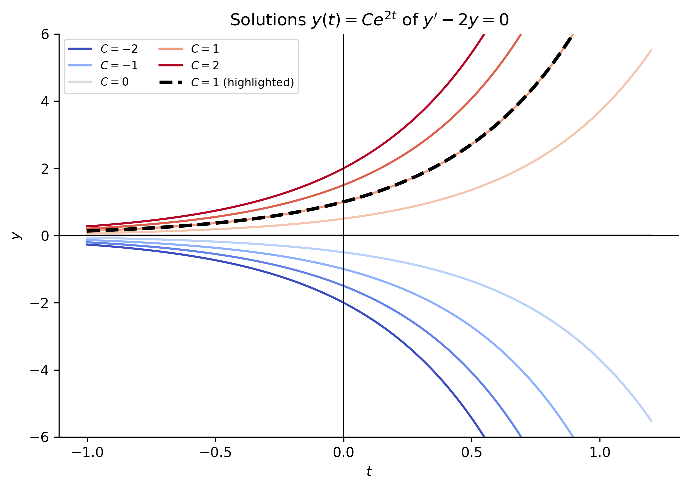
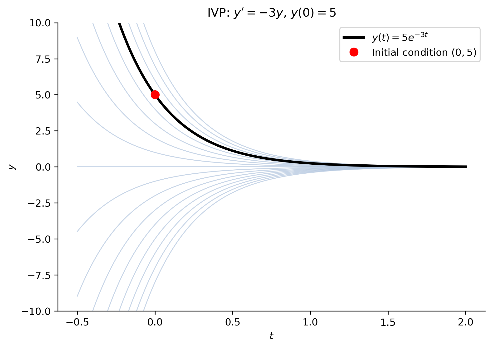
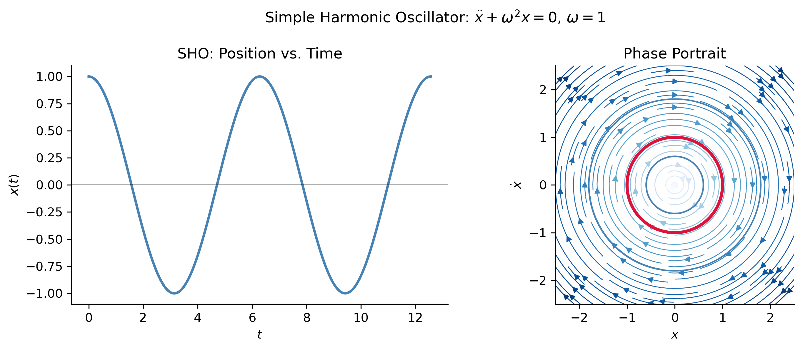

# This is a code cell that imports the necessary libraries for our session.import numpy as np # NumPy for numerical computationsimport scipy as sp # SciPy for scientific computingimport sympy as sym # SymPy for symbolic mathematicsimport matplotlib as mpl # Matplotlib for plottingimport matplotlib.pyplot as plt # Matplotlib pyplot interfacefrom scipy.integrate import solve_ivp # ODE solvermpl.rcParams['figure.dpi'] =150mpl.rcParams['axes.spines.top'] =Falsempl.rcParams['axes.spines.right'] =False
Goals
In this section, we will:
Introduce the notion of a differential equation and what it means to have a solution, with an emphasis on the case of ordinary differential equations (ODEs).
Introduce the classification of ODEs by order, linearity, homogeneity, autonomy, and coefficient type.
Introduce the concept of an initial value problem (IVP).
Introduce some common situations where ODEs arise in applications.
Note
This material corresponds to Section 1.1 of Logan (2015).
The Concept of a Differential Equation
Essential Notation and Terminology
Informally, a differential equation is any equation that involves an unknown function together with one or more of its derivatives. The goal is not to find an unknown number (as in an algebraic equation like \(x^2 - 4 = 0\)) but to find an unknown function that satisfies the equation.
Important
Solutions to differential equations are functions, not numbers.
For example, the equation \[
\frac{dy}{dx} = y
\] asks: what function \(y(x)\) equals its own derivative? Of course, the answer is \(y(x) = Ce^{x}\) for any constant \(C\), since \((Ce^x)' = Ce^x\)!
It is rare that we study a general differential equation in complete isolation. Typically, we study a specific class of equations or a specific equation that arises in a particular context or an application. (See this list on named differential equations to get a sense of where one can find differential equations in mathematics and its applications.) To understand the landscape of possibilities, it is useful to classify equations according to their essential characteristics.
Ordinary vs. Partial Differential Equations. The nature of the unknown function’s domain leads to the first major distinction:
An ordinary differential equation (ODE) involves a function of a single independent variable and its ordinary derivatives. For example, if \(x = x(t)\) describes the position of a mass at time \(t\), then \(\frac{d^2 x}{dt^2} = -\omega^2 x\) (or as physicists write, \(\ddot{x} = -\omega^2 x\)) is an ODE. Note that we sometimes use the notation \(\dot{x}\) for time derivatives.
NoteA Note on Derivative Notation
There are several common notations for derivatives that you will encounter in this course and in the textbook. Leibniz notation writes \(\frac{dy}{dx}\) or \(\frac{d^2y}{dx^2}\) for ordinary derivatives. Prime (Lagrange) notation writes \(y'\), \(y''\), \(y'''\) for successive derivatives with respect to the independent variable. Dot (Newton) notation writes \(\dot{x}\), \(\ddot{x}\) for first and second derivatives with respect to time, and is common in mechanics. Subscript notation writes \(u_x\), \(u_{xx}\) for partial derivatives, common in PDEs. Operator (Euler) notation writes \(Dy\), \(D^2y\) where \(D = d/dx\). All of these notations refer to the same mathematical objects and will be used interchangeably throughout the course.
A partial differential equation (PDE) involves a function of several independent variables and its partial derivatives. For example, the heat equation\(u_t = k\,u_{xx}\), where \(u = u(x,t)\) is a temperature field, is a PDE.
In this course we focus exclusively on ODEs.
Classification of ODEs. Once we know we are dealing with an ODE, we further classify it along several axes. Suppose the unknown is \(y\) and the independent variable is \(t\).
Order. The order of an ODE is the order of the highest derivative that appears.
Equation
Order
\(y' = ky\)
1st
\(y'' + \omega^2 y = 0\)
2nd
\(y''' - y'' + y = \sin t\)
3rd
A general \(n\)th-order ODE can be written as \[
F\!\left(t,\, y,\, y',\, y'',\, \ldots,\, y^{(n)}\right) = 0,
\] or, if it can be solved for the highest derivative (usually the case in applications), \[
y^{(n)} = f\!\left(t,\, y,\, y',\, \ldots,\, y^{(n-1)}\right).
\]
Linearity. An ODE is linear if it can be written as \[
a_n(t)\,y^{(n)} + a_{n-1}(t)\,y^{(n-1)} + \cdots + a_1(t)\,y' + a_0(t)\,y = g(t),
\] where the coefficient functions \(a_k(t)\) and the forcing term \(g(t)\) depend only on the independent variable \(t\), not on \(y\) or any of its derivatives. An ODE that cannot be put in this form is nonlinear.
Equation
Linear?
Why
\(y'' + 3y' - 2y = e^t\)
Yes
Coefficients depend only on \(t\)
\(y'' + \sin(y) = 0\)
No
\(\sin(y)\) is nonlinear in \(y\)
\(y' = y^2\)
No
\(y^2\) is nonlinear in \(y\)
\(t^2 y'' + ty' + y = 0\)
Yes
Coefficients \(t^2, t, 1\) depend only on \(t\)
Homogeneity. A linear ODE is homogeneous when the forcing term is identically zero, \(g(t) \equiv 0\): \[
a_n(t)\,y^{(n)} + \cdots + a_0(t)\,y = 0.
\] If \(g(t) \not\equiv 0\) the equation is called inhomogeneous (or nonhomogeneous; Logan’s text uses the latter term, and both are in wide use).
Tip
The homogeneous/inhomogeneous distinction matters enormously for solution methods: the general solution of an inhomogeneous linear ODE is a particular solution plus the general solution of the corresponding homogeneous equation.
Constant vs. Variable Coefficients. A linear ODE has constant coefficients when each \(a_k(t)\) is a constant; otherwise it has variable (non-constant) coefficients.
Equation
Constant Coeff.?
\(y'' - 4y' + 4y = 0\)
Yes
\(t^2 y'' + ty' - y = 0\)
No (\(a_k\) depend on \(t\))
Autonomy. An ODE is autonomous if the independent variable \(t\) does not appear explicitly on the right-hand side: \[
y' = f(y) \quad \text{(autonomous)}, \qquad y' = f(t, y) \quad \text{(non-autonomous)}.
\] Autonomous equations arise naturally in population models and physical systems where the “rules” do not change over time.
Examples. The following examples illustrate how these classifications apply simultaneously to equations drawn from applications we will study throughout the course.
NoteExample 1 — The Logistic Equation
\[
\frac{dP}{dt} = rP\!\left(1 - \frac{P}{K}\right)
\] This is a 1st-order, nonlinear, autonomous ODE. It is nonlinear because expanding \(rP(1-P/K) = rP - (r/K)P^2\) reveals a \(P^2\) term, which is nonlinear in \(P\). Here, \(P(t)\) is the unknown function while \(r\) and \(K\) are parameters. This ODE, called the logistic growth equation models population growth with a carrying capacity \(K\).
NoteExample 2 — The Simple Harmonic Oscillator
\[
\frac{d^2x}{dt^2} + \omega^2 x = 0
\] This is a 2nd-order, linear, homogeneous, autonomous ODE with constant coefficients. Note that \(\omega\) is a constant parameter, not a function of \(t\).
NoteExample 3 — A Driven Oscillator
\[
\frac{d^2x}{dt^2} + 2\gamma\frac{dx}{dt} + \omega^2 x = F_0\cos(\Omega t)
\] This is a 2nd-order, linear, inhomogeneous, non-autonomous ODE with constant coefficients.
\[
t^2 y'' + t y' - 4y = 0
\] This is a 2nd-order, linear, homogeneous ODE with variable (non-constant) coefficients.
What does a solution look like? A solution of an ODE on an interval \(I\) is a function \(y = \phi(t)\) that:
is differentiable (as many times as required by the order of the ODE) on \(I\), and
satisfies the equation for every \(t \in I\).
Because differentiation is a linear operation, ODE solutions often come in families parametrized by one or more arbitrary constants.
NoteExample 5 — General and Particular Solutions
Consider \(y' - 2y = 0\). We can check that \(y(t) = Ce^{2t}\) satisfies this for any constant \(C\): \[
(Ce^{2t})' - 2(Ce^{2t}) = 2Ce^{2t} - 2Ce^{2t} = 0. \checkmark
\] This is the general solution — that is, every solution has this form, as can be verified by separation of variables (a technique we will develop in §1.2). If we additionally require \(y(0) = 1\), then \(C = 1\) and \(y(t) = e^{2t}\) is the particular solution satisfying that condition.
The following plot shows the family of solutions \(y(t)=Ce^{2t}\) for several values of \(C\).
Show the code
t = np.linspace(-1, 1.2, 300)fig, ax = plt.subplots()colors = plt.cm.coolwarm(np.linspace(0, 1, 9))C_vals = [-2, -1.5, -1, -0.5, 0, 0.5, 1, 1.5, 2]for C, color inzip(C_vals, colors): label =f"$C = {C}$"if C in [-2, -1, 0, 1, 2] elseNone ax.plot(t, C * np.exp(2* t), color=color, lw=1.5, label=label)# Highlight the particular solution for C=1, corresponding to the initial condition y(0)=1ax.plot(t, 1* np.exp(2* t), color='black', lw=2.5, linestyle='--', label='$C = 1$ (particular solution, $y(0)=1$)')ax.axhline(0, color='k', linewidth=0.5)ax.axvline(0, color='k', linewidth=0.5)ax.set_xlabel("$t$")ax.set_ylabel("$y$")ax.set_ylim(-6, 6)ax.set_title(r"Solutions $y(t) = Ce^{2t}$ of $y' - 2y = 0$")ax.legend(fontsize=8, ncol=2)plt.tight_layout()plt.show()

Figure 1: Family of solutions \(y(t) = Ce^{2t}\) to the ODE \(y' - 2y = 0\). Each curve corresponds to a different value of \(C\). The highlighted trajectory (dashed black) is the particular solution \(C=1\) corresponding to the initial condition \(y(0)=1\). Specifying an initial condition singles out exactly one curve from the family.
Note: A 1st-order ODE typically has a one-parameter family of solutions; a 2nd-order ODE typically has a two-parameter family, and so on. Fixing all free constants yields a particular solution.
Initial Value Problems
In most applications we do not just want any solution, we want the solution whose state (value as a function) at some initial moment matches given initial data.
ImportantInitial Value Problem (IVP)
A first-order initial value problem consists of a first-order ODE together with a specified value of the solution at an initial time \(t_0\): \[
\begin{cases}
y' = f(t,\, y), \\
y(t_0) = y_0.
\end{cases}
\] More generally, an \(n\)th-order IVP specifies the values of \(y\) and its first \(n-1\) derivatives at \(t_0\): \[
\begin{cases}
y^{(n)} = f\!\left(t, y, y', \ldots, y^{(n-1)}\right), \\
y(t_0) = y_0,\quad y'(t_0) = y_1,\quad \ldots,\quad y^{(n-1)}(t_0) = y_{n-1}.
\end{cases}
\]
The initial conditions geometrically select a single solution curve from the entire family of curves.
Existence and Uniqueness. A natural question is: does an IVP have a solution, and if so, is it unique? A fundamental theorem (the Picard–Lindelöf theorem) guarantees that if \(f\) and \(\partial f/\partial y\) are continuous near \((t_0, y_0)\), then the IVP has a unique solution on some interval containing \(t_0\). This is discussed more detail in one of our additional topics sections on existence and uniqueness; for now, the key takeaway is that well-posed physical problems almost always satisfy these conditions and the solution is independent of the method used to find it — that is, any method that produces a solution yields the same function.
NoteExample 6 — Solving an IVP by Hand
Solve the IVP: \[
y' = -3y, \qquad y(0) = 5.
\]
Solution. The general solution to \(y' = -3y\) is \(y(t) = Ce^{-3t}\). Applying \(y(0) = 5\): \[
C e^{0} = 5 \implies C = 5.
\] The unique solution is \(\boxed{y(t) = 5e^{-3t}}\).
Show the code
t = np.linspace(-0.5, 2, 400)fig, ax = plt.subplots()for C in np.linspace(-8, 8, 17): ax.plot(t, C * np.exp(-3* t), color='lightsteelblue', lw=0.9, alpha=0.7)ax.plot(t, 5* np.exp(-3* t), color='black', lw=2.5, label=r'$y(t)=5e^{-3t}$')ax.plot(0, 5, 'ro', markersize=8, zorder=5, label='Initial condition $(0, 5)$')ax.set_ylim(-10, 10)ax.set_xlabel('$t$')ax.set_ylabel('$y$')ax.set_title(r"IVP: $y' = -3y$, $y(0)=5$")ax.legend()plt.tight_layout()plt.show()

Figure 2: The IVP \(y'=-3y\), \(y(0)=5\) selects a unique solution curve (bold black) from the family \(y(t)=Ce^{-3t}\) (gray). The initial condition is marked with a red dot.
Where ODEs Come From
Differential equations arise throughout science and engineering wherever a quantity’s rate of change is related to its current state. Below we survey three classical and important sources.
Classical Mechanics
Classical mechanics is the branch of physics that studies the motion of objects under the influence of forces. It arguably provides the richest single source of ODEs in undergraduate mathematics. Here we derive ODEs for the simplest mechanical system—the simple harmonic oscillator (SHO)—from three different but equivalent frameworks. You do not need a physics background to follow the math.
Newton’s Second Law
Isaac Newton’s second law states that the net force \(F\) on an object equals its mass \(m\) times its acceleration \(a\): \[
F = ma \quad \Longleftrightarrow \quad F = m\ddot{x},
\] where \(x(t)\) denotes position and dots denote time derivatives (\(\dot{x} = dx/dt\), \(\ddot{x} = d^2x/dt^2\)).
Setup. Attach a mass \(m\) to a spring with spring constant \(k > 0\). Hooke’s law says the spring exerts a restoring force \(F = -kx\) when the mass is displaced a distance \(x\) from equilibrium. Newton’s second law then gives: \[
m\ddot{x} = -kx \quad \Longrightarrow \quad \ddot{x} + \omega^2 x = 0, \qquad \omega = \sqrt{k/m}.
\] This is a 2nd-order, linear, homogeneous, constant-coefficient, autonomous ODE. As we will later learn, its general solution is \[
x(t) = A\cos(\omega t) + B\sin(\omega t),
\] which describes oscillation with angular frequency\(\omega\).
The Euler–Lagrange Equations
The Lagrangian formulation of mechanics, developed by Joseph-Louis Lagrange, reformulates Newton’s laws in terms of energy rather than force. It is especially powerful for constrained systems.
Define the Lagrangian\(L = T - V\), where \(T\) is the kinetic energy and \(V\) is the potential energy. The Euler–Lagrange equation for a coordinate \(q(t)\) is: \[
\frac{d}{dt}\left(\frac{\partial L}{\partial \dot{q}}\right) - \frac{\partial L}{\partial q} = 0.
\]
For the SHO. The kinetic and potential energies are: \[
T = \tfrac{1}{2}m\dot{x}^2, \qquad V = \tfrac{1}{2}kx^2.
\] So \(L = \tfrac{1}{2}m\dot{x}^2 - \tfrac{1}{2}kx^2\). Computing the required partial derivatives: \[
\frac{\partial L}{\partial \dot{x}} = m\dot{x}, \qquad \frac{\partial L}{\partial x} = -kx.
\] Substituting into the Euler–Lagrange equation: \[
\frac{d}{dt}(m\dot{x}) - (-kx) = 0 \quad \Longrightarrow \quad m\ddot{x} + kx = 0.
\] We recover exactly the same ODE as before. This is expected, because ultimately Lagrangian mechanics is equivalent to Newtonian mechanics.
Hamilton’s Equations
The Hamiltonian formulation, developed by William Rowan Hamilton, describes mechanics via the total energy expressed in terms of position \(q\) and momentum\(p = m\dot{q}\). The Hamiltonian is: \[
H(q, p) = T + V.
\] Hamilton’s equations are a system of two first-order ODEs: \[
\dot{q} = \frac{\partial H}{\partial p}, \qquad \dot{p} = -\frac{\partial H}{\partial q}.
\]
For the SHO. With \(q = x\) and \(p = m\dot{x}\): \[
H = \frac{p^2}{2m} + \frac{1}{2}kq^2.
\] Hamilton’s equations give: \[
\dot{q} = \frac{\partial H}{\partial p} = \frac{p}{m}, \qquad \dot{p} = -\frac{\partial H}{\partial q} = -kq.
\] Differentiating the first equation: \(\ddot{q} = \dot{p}/m = -kq/m\), i.e., \(\ddot{q} + \omega^2 q = 0\). Same ODE once more.
Tip
Notice that one 2nd-order ODE has been replaced by two 1st-order ODEs. For the SHO specifically, the system is: \[
\dot{x} = \frac{p}{m}, \qquad \dot{p} = -kx.
\] This is a standard and important technique: any \(n\)th-order ODE can be converted to a system of \(n\) first-order ODEs. We will return to this systematically in Chapter 4.
Summary. All three frameworks—Newton, Lagrange, Hamilton—lead to the same differential equation for the SHO. This illustrates a general principle: the ODE is the fundamental mathematical object encoding the physics, and different frameworks are merely different ways to derive it.
The plot below shows the solution of the SHO IVP and its phase portrait (a concept we will study in more detail later).
Show the code
omega =1.0t_span = (0, 4* np.pi)t_eval = np.linspace(*t_span, 500)def sho(t, y): x, v = yreturn [v, -omega**2* x]fig, axes = plt.subplots(1, 2, figsize=(10, 4))# Time-domain solutionsol = solve_ivp(sho, t_span, [1.0, 0.0], t_eval=t_eval)axes[0].plot(sol.t, sol.y[0], color='steelblue', lw=2)axes[0].set_xlabel('$t$')axes[0].set_ylabel('$x(t)$')axes[0].set_title('SHO: Position vs. Time')axes[0].axhline(0, color='k', lw=0.5)# Phase portraitx_vals = np.linspace(-2.5, 2.5, 400)v_vals = np.linspace(-2.5, 2.5, 400)X, V = np.meshgrid(x_vals, v_vals)DX = VDV =-omega**2* Xspeed = np.sqrt(DX**2+ DV**2)speed[speed ==0] =1axes[1].streamplot(x_vals, v_vals, DX / speed, DV / speed, color=np.log1p(speed), cmap='Blues', linewidth=0.7, density=1.3)# Highlight specific trajectoryfor ic in [(1.0, 0.0), (1.8, 0.0), (0.6, 0.0)]: s = solve_ivp(sho, (0, 2*np.pi), list(ic), t_eval=np.linspace(0, 2*np.pi, 300)) lw =2.5if ic == (1.0, 0.0) else1.2 color ='crimson'if ic == (1.0, 0.0) else'steelblue' axes[1].plot(s.y[0], s.y[1], color=color, lw=lw)axes[1].set_xlabel('$x$')axes[1].set_ylabel(r'$\dot{x}$')axes[1].set_title('Phase Portrait')axes[1].set_aspect('equal')plt.suptitle(r'Simple Harmonic Oscillator: $\ddot{x}+\omega^2 x=0$, $\omega=1$', fontsize=12)plt.tight_layout()plt.show()

Figure 3: Simple harmonic oscillator with \(\omega = 1\), \(x(0)=1\), \(v(0)=0\). Left: position \(x(t)\) over time. Right: phase portrait — trajectories in the \((x,\dot{x})\) plane. Each closed ellipse is a solution for a different initial condition; the highlighted trajectory corresponds to the given IVP.
Tip
The phase portrait (right panel) is one of the most important visualization tools for systems of ODEs. Each point \((x, \dot{x})\) represents a complete state of the oscillator, and the trajectory through that point shows how the state evolves over time. Closed curves correspond to periodic (oscillatory) motion.
The RLC Circuit. Consider a series circuit containing a resistor (\(R\)), inductor (\(L\)), and capacitor (\(C\)) driven by a voltage source \(E(t)\). Kirchhoff’s voltage law states that the sum of voltage drops around any closed loop is zero: \[
V_L + V_R + V_C - E(t) = 0.
\] With current \(I = dQ/dt\) where \(Q\) is the charge on the capacitor, and \(V_C = Q/C\), this becomes: \[
L\frac{d^2Q}{dt^2} + R\frac{dQ}{dt} + \frac{Q}{C} = E(t).
\]
This is a 2nd-order, linear ODE with constant coefficients — mathematically identical in form to the damped driven harmonic oscillator! This deep analogy between mechanical and electrical systems is one of the most beautiful and useful facts in applied mathematics.
Mechanical
Electrical
Mass \(m\)
Inductance \(L\)
Damping \(b\) (introduced later)
Resistance \(R\)
Spring constant \(k\)
\(1/C\)
Applied force \(F(t)\)
EMF \(E(t)\)
Displacement \(x\)
Charge \(Q\)
For an RC circuit (no inductor, no driving voltage) the ODE reduces to a simple 1st-order equation: \[
R\frac{dQ}{dt} + \frac{Q}{C} = 0 \quad \Longrightarrow \quad \frac{dQ}{dt} = -\frac{Q}{RC}.
\] This is the same exponential decay equation as one obtains in the study of radioactive decay.
Figure 4: Discharge of an RC circuit: \(Q(t)=Q_0 e^{-t/\tau}\) where \(\tau=RC\) is the time constant. The charge decays to \(1/e \approx 36.8\%\) of its initial value after one time constant.
Exponential Growth / Malthusian Model. The simplest model: a population \(P(t)\) grows at a rate proportional to its current size, \[
\frac{dP}{dt} = rP, \qquad P(0) = P_0.
\] The solution \(P(t) = P_0 e^{rt}\) predicts unbounded growth (if \(r > 0\)) or extinction (if \(r < 0\)). This model was proposed by Thomas Malthus in 1798.
Logistic Growth. Unbounded growth is unrealistic. Pierre François Verhulst proposed (1838) adding a carrying capacity\(K\) that limits growth: \[
\frac{dP}{dt} = rP\!\left(1 - \frac{P}{K}\right), \qquad P(0) = P_0.
\] This is the logistic equation, a 1st-order nonlinear autonomous ODE. Its exact solution, which we will later learn how to derive is: \[
P(t) = \frac{K}{1 + \left(\dfrac{K}{P_0} - 1\right)e^{-rt}}.
\] As \(t \to \infty\), \(P(t) \to K\) regardless of the initial population (as long as \(P_0 > 0\)).
Figure 5: Logistic growth (\(r=1\), \(K=100\)) from several initial conditions. All trajectories converge to the carrying capacity \(K=100\) (dashed line), illustrating the stability of the equilibrium.
Tip
Notice in the plot above that solutions starting above\(K\) decrease toward it, while solutions starting below\(K\) increase toward it. The value \(P = K\) is a stable equilibrium of the logistic equation. We will study equilibria and their stability in detail later in the course.
Predator–Prey Dynamics. When two species interact, we need a system of ODEs. The classical Lotka–Volterra equations model the dynamics of a prey species \(x\) and a predator species \(y\): \[
\frac{dx}{dt} = \alpha x - \beta x y, \qquad \frac{dy}{dt} = \delta x y - \gamma y.
\] This system is nonlinear and has no closed-form solution in general, but exhibits fascinating oscillatory behavior that we will encounter when we study systems of ODEs.
Summary
Key Takeaways
A differential equation relates an unknown function to its derivatives. Solutions are functions, not numbers.
ODEs are classified by order, linearity, homogeneity, coefficient type (constant vs. variable), and autonomy.
An IVP pins down a unique solution by specifying initial data. The Picard–Lindelöf theorem guarantees existence and uniqueness under relatively mild conditions.
Newton, Lagrange, and Hamilton all produce the same ODE for the simple harmonic oscillator. Thus, the ODE (equation(s) of motion in this context) is the fundamental object.